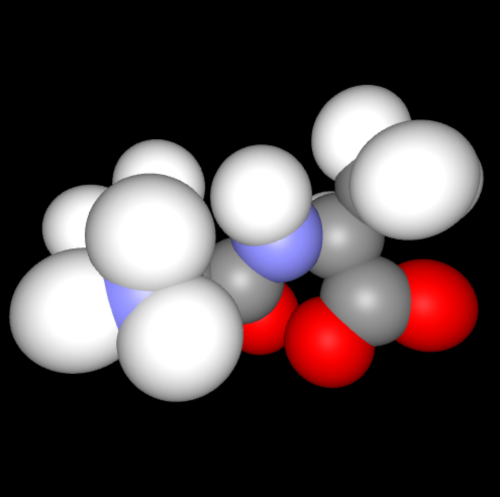

Getting started
BiochemicalVisualization.jl provides graphical representations of molecular systems. In the following example, a sample structure is loaded through BiochemicalAlgorithms.jl and prepared for visualization later on.
using BiochemicalAlgorithms, BiochemicalVisualization
# Read PDB file from the BiochemicalAlgorithms.jl repository
sys = load_pdb(ball_data_path("../test/data/AlaAla.pdb"))
# Prepare molecule
fdb = FragmentDB()
normalize_names!(sys, fdb)
reconstruct_fragments!(sys, fdb)
build_bonds!(sys, fdb)Available representations
The following code examples showcase all currently available representations. Please note that, on this page, all interactive widgets are replaced by screenshots thereof. When executed locally, e.g., in a Julia REPL or in a Jupyter notebook, the code examples should open a browser window with the correpsonding widget or embed the widget into the notebook, respectively.
Ball-and-stick representation
ball_and_stick(sys)
Ball-and-stick representation of a simple molecule
Stick representation
stick(sys)
Stick representation of a simple molecule
Van-der-Waals surface representation
van_der_waals(sys)
Van-der-waals representation of a simple molecule with unit radii
Please note that the sphere radii are currently not automatically assigned by atom type but rather read from the corresponding Atom object (i.e., from its radius field).